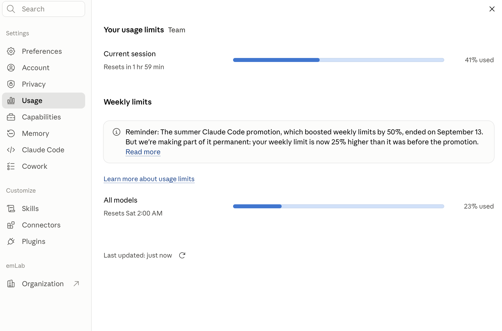

Jordan Wingenroth
Claude Study Club
September 16, 2026
Since our team account opened in mid-July, emLab has engaged in
…and counting*
*The contents of which are private. The admin panel just shows summary stats.
We have done much of that within our individual usage limits, but we have also taken advantage of
provided by Anthropic
as a welcome bonus.
Now that we have used up the extra credits, those usage warnings carry a bit more weight.
Claude uses a system of
5-hour session limits and
7-day weekly limits.
How to view them depends on which platform you are using.
On Claude Code, you can type /usage.
In the Chat and Cowork apps, it is a page in the settings menu accessed by clicking your name in the lower left.

Every individual user has their own limit. Unlike the shared extra usage credits, now your usage doesn't affect availability for others at all.
Usage of Chat, Code, and Cowork all deduct from the same limit, although they may have different per-token rates.
Across the platforms, the higher-tier models burn usage faster, but the relative rates aren't known.
Ultimately, there is no published explanation of how Anthropic gets to the percent value you see in the menu.
🤷
There are four levels of Claude.
Current versions are:
There is also a restricted model called Mythos, which Fable is built on.
Consider starting with:
First, some definitions:
Token: Large language models (LLMs) are trained on and work with text in units of a few characters each—about 4 on average per token including spaces and punctuation.
Context window: When you write the first prompt of a conversation, the LLM reads a bunch of other text and files alongside it. For subsequent prompts it also remembers the whole conversation, including file reads and writes.*
*until it runs out of space, but frontier models have space for 1,000,000+ tokens in their context window, the equivalent of around 2,000 pages.